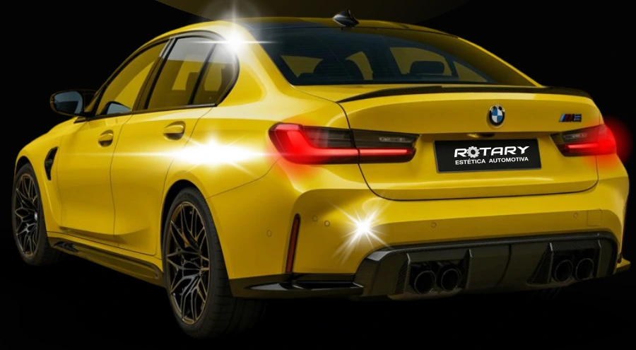
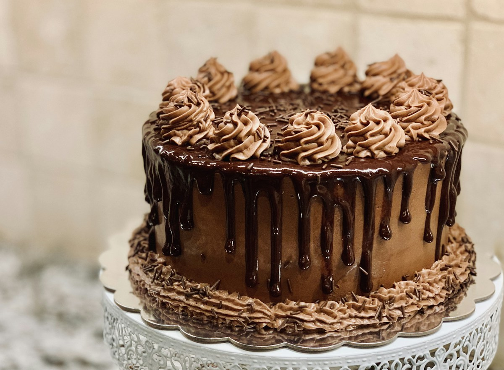
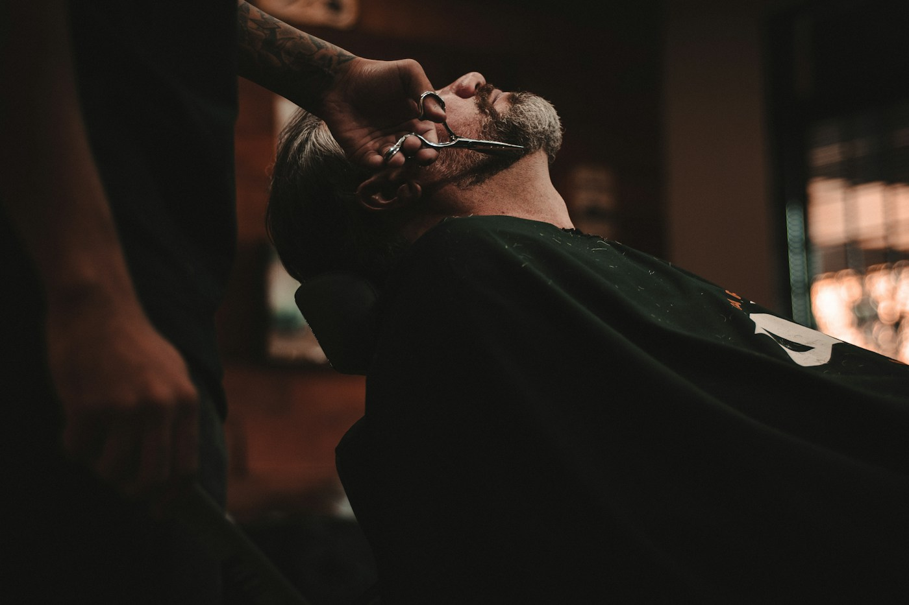

Rotary
Identidade preta e amarela, catálogo original, preços e simulação de agendamento.
Abrir prévia RotarySETE EMPRESAS. SETE EXPERIÊNCIAS.
Conceitos personalizados para apresentar o negócio e demonstrar solicitações e agendamentos. Cada empresa tem seu próprio link.

Identidade preta e amarela, catálogo original, preços e simulação de agendamento.
Abrir prévia Rotary
Apresentação delicada e solicitação de encomendas para celebrações.
Abrir prévia TatiiVisual acolhedor e solicitação de visita com os detalhes do pet.
Abrir prévia Mon Chéri
Estética automotiva com visual escuro e solicitação de atendimento.
Abrir prévia Perfect
Assessoria e cerimonial com consulta de interesse para casamentos.
Abrir prévia Samantha
Serviços e simulação de agendamento com escolha do profissional.
Abrir prévia Felipe Barber
Restaurante napolitano no Tatuapé: menu, delivery e solicitação de reserva.
Abrir prévia Mamma ConcettaFormulários demonstrativos não enviam nem registram dados em servidor. As fotos de banco de imagens são identificadas. A versão operacional terá base de dados, validação de capacidade e painel de gestão após contratação e implantação.